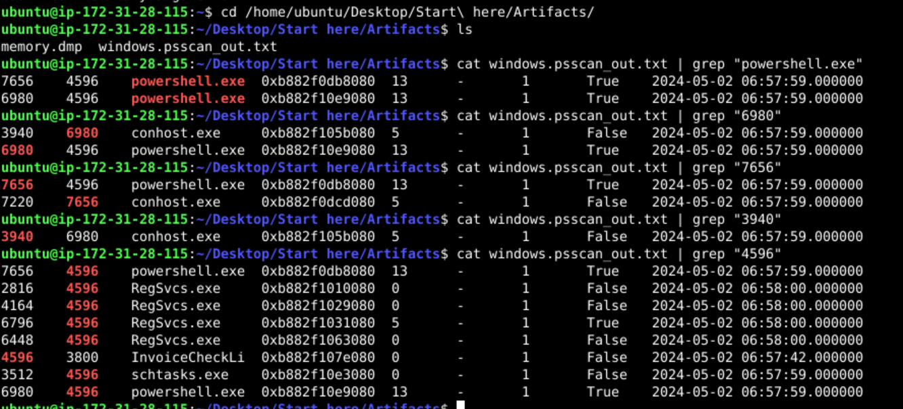
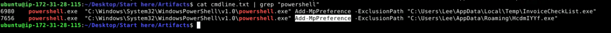
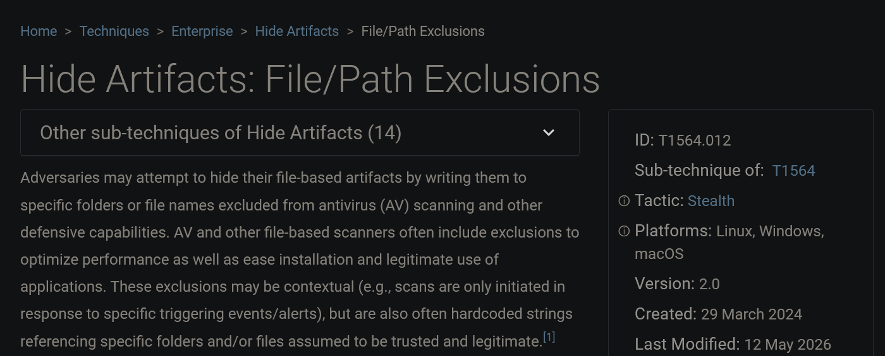

Memory forensics investigation of a Windows host (memory.dmp) using Volatility 3. The provided artifacts included a pre-generated windows.psscan output (windows.psscan_out.txt), which I grepped through to trace process relationships.
Tools: Volatility 3 Framework 2.7.0
Q1 — Parent process of the malicious PowerShell
Question: What is the name of the suspicious process that spawned two malicious PowerShell processes?
Answer: InvoiceCheckList.exe
I grepped the psscan output for powershell.exe and found two PIDs (6980, 7656), both with parent PID 4596. Tracing 4596 back through the output shows the parent is InvoiceCheckLi (truncated InvoiceCheckList.exe), PID 4596.
cat windows.psscan_out.txt | grep "powershell.exe"
cat windows.psscan_out.txt | grep "4596"
powershell.exe(6980) → parent 4596powershell.exe(7656) → parent 4596InvoiceCheckLi(4596) → parent 3800

Q2 — Persistence executable
Question: Which executable is responsible for the malware's persistence?
Answer: schtasks.exe
The same parent PID (4596) also spawned schtasks.exe (PID 3512). Use of schtasks indicates the attacker created a scheduled task for persistence.
Q3 — Other suspicious child process
Question: Aside from the PowerShell processes, what other active suspicious process originates from the same parent?
Answer: RegSvcs.exe
Grepping parent PID 4596 shows multiple RegSvcs.exe instances (PIDs 2816, 4164, 6796, 6448). RegSvcs.exe is a legitimate .NET binary commonly abused for process injection / defense evasion (a LOLBIN).
Q4 — Defense-evasion cmdlet
Question: What PowerShell cmdlet was used by the malware for defense evasion?
Answer: Add-MpPreference
Extracted with windows.cmdline. Add-MpPreference -ExclusionPath adds a path to Windows Defender's exclusion list so the specified files are skipped during scanning.
vol -f memory.dmp windows.cmdline > cmdline.txt
cat cmdline.txt | grep "powershell"
powershell.exe ... Add-MpPreference -ExclusionPath "C:\Users\Lee\AppData\Local\Temp\InvoiceCheckList.exe"
powershell.exe ... Add-MpPreference -ExclusionPath "C:\Users\Lee\AppData\Roaming\HcdmIYYf.exe"

Q5 — Excluded applications
Question: Which two applications were excluded by the malware from Defender's settings?
Answer: InvoiceCheckList.exe, HcdmIYYf.exe
From the two Add-MpPreference -ExclusionPath commands above:
C:\Users\Lee\AppData\Local\Temp\InvoiceCheckList.exeC:\Users\Lee\AppData\Roaming\HcdmIYYf.exe
Q6 — MITRE ATT&CK sub-technique
Question: What sub-technique ID describes an adversary configuring exempted folders or path exclusions to hide malicious payloads from security inspection?
Answer: T1564.012 — Hide Artifacts: File/Path Exclusions
This sub-technique covers hiding file-based artifacts in folders/paths excluded from AV scanning.

Note: This overlaps with T1562.001 (Impair Defenses: Disable or Modify Tools), which is where the act of modifying Defender via
Add-MpPreferencemaps. The question's wording ("exempted folders or path exclusions to hide payloads") points to T1564.012. Confirm against the challenge's accepted answer.
Q7 — User account
Question: Which user account is linked to the malicious processes?
Answer: Lee
The exclusion paths reference C:\Users\Lee\..., confirming the malicious processes ran under the local user Lee.
Summary
An InvoiceCheckList.exe dropper (PID 4596) spawned two PowerShell processes that added Defender exclusions for its payloads (InvoiceCheckList.exe, HcdmIYYf.exe), established persistence via schtasks.exe, and ran RegSvcs.exe for likely injection. All activity executed under user Lee.
| Tactic | Technique | Artifact |
|---|---|---|
| Execution | PowerShell | powershell.exe (6980, 7656) |
| Defense Evasion | Impair Defenses / File-Path Exclusions | Add-MpPreference -ExclusionPath |
| Persistence | Scheduled Task | schtasks.exe (3512) |
| Defense Evasion | LOLBIN abuse | RegSvcs.exe |